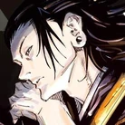

Selecione o seu personagem
-

-

-

- 
Yuji Itadori
Yuji é famoso por suas habilidades físicas sobre-humanas, além de ter a habilidade extremamente rara de conter a alma de Sukuna sem quaisquer efeitos nocivos